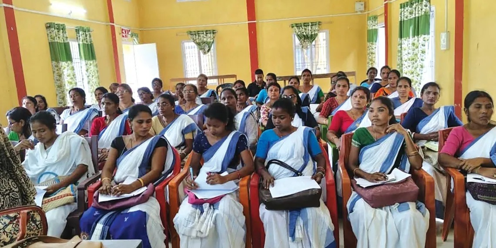
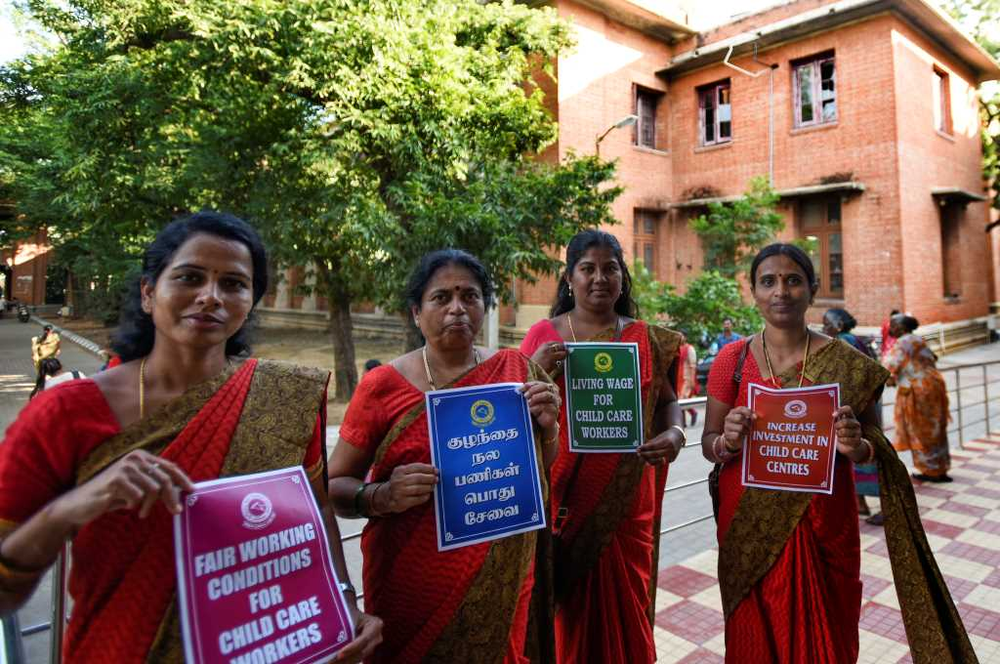
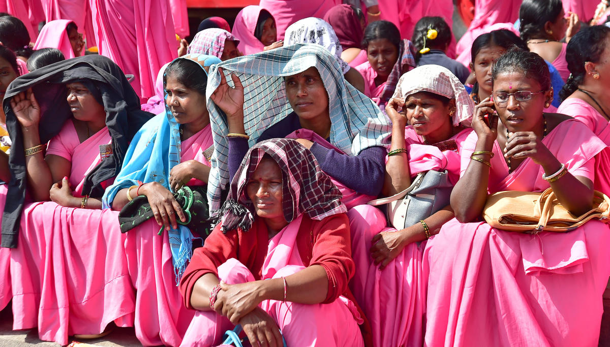

Welcome to AASHA Connect
A digital governance platform empowering ASHA workers to collect, verify, and manage family health data even in low-connectivity rural environments.



A digital governance platform empowering ASHA workers to collect, verify, and manage family health data even in low-connectivity rural environments.
The National Health Mission (NHM) was launched to address the health care needs of the country through community-based initiatives.
AASHA Connect digitizes field-level workflows such as household surveys, maternal tracking, and scheme awareness while maintaining an offline-first system design inspired by real government healthcare operations.
Read MoreState & District Level
State & District Trainer
State & District Trainer
for ASHA Component I
for ASHA Component II
All the ASHA Modules
Induction Training Module for ASHAs
ASHA Module 6 (English)
ASHA Module 7 (English)